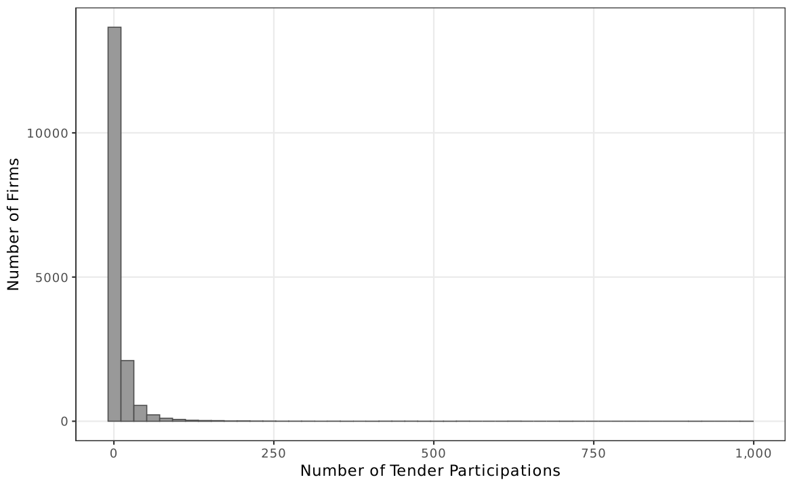
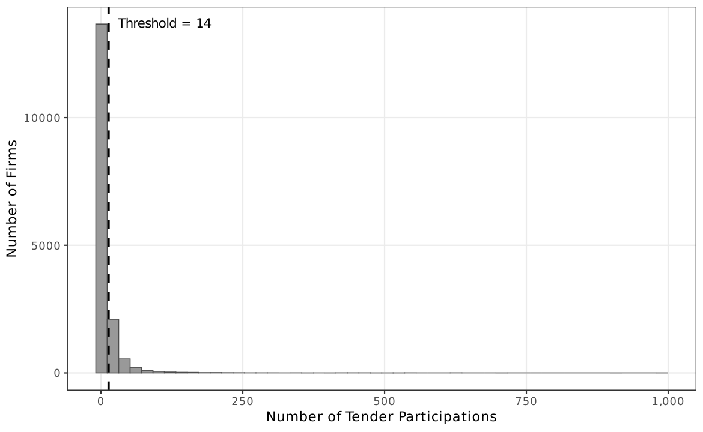
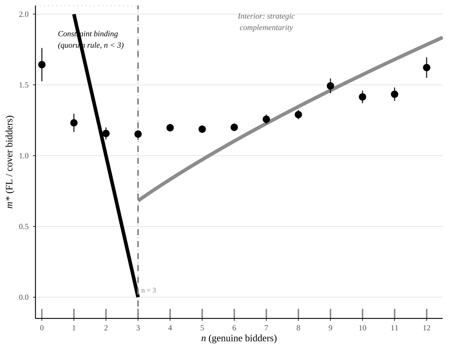

Manuscript¶
This page summarizes the contribution, institutional setting, conceptual framework, and empirical strategy of the paper.
Contribution¶
The paper makes three contributions:
-
Participation-based screen. We introduce a screen that runs on win/loss records alone---no bid microdata, no enforcement priors, no supervised training---and can be deployed by any procurement agency that records who bid and who won. Against competition-authority convictions, the screen achieves AUC \(= 0.94\), flags environments with 3.6--7.7% higher conditional prices, and complements bid-level tools that capture different collusion signatures (correlation 0.06).
-
Five supporting diagnostics. Bajari--Ye bid-coordination tests, network-split heterogeneity, regime selection, dyadic linkage, and minimum-bidder constraint variation are jointly consistent with coordinated cover bidding.
-
Institutional tie-in. The price association concentrates where cover bidding is a strategic choice (7.6% voluntary premium) and where oversight is weakest (12.5x gradient across purchasing-unit size quartiles), tying the screen's empirical performance to the institutional features that make cover bidding profitable.
Non-claims. The conditional price association is not a causal estimate of the effect of collusion on prices; the FL classification flags suspicious environments, not guilty firms; and the diagnostics, while consistent with coordinated cover bidding, fall short of sanction-grade evidence. What the paper contributes is the screen itself---how to build it, how it performs against external enforcement data, and why the diagnostic pattern supports its use as a first-stage investigative tool.
Institutional Background¶
BEC Platform¶
The Bolsa Eletronica de Compras (BEC) is Sao Paulo state's centralized electronic procurement platform, used by 1,308 public buying units (PBUs) from 2009 to 2019.
Two procurement modalities are relevant:
| Modality | Format | Key Feature |
|---|---|---|
| Convite | Sealed-bid | Requires minimum 3 bidders (Lei 8.666/93); threshold R$ 80,000 |
| Pregao | Electronic reverse auction | Standard modality; no bidder minimum; real-time bids |
Cover Bidding Incentives¶
- Convite: the 3-bidder minimum creates direct demand for cover bidders---a cartel with fewer than 3 members needs cover bidders to meet the quorum rule. The constraint forces some participation regardless of market conditions, diluting the FL signal (3.8% price association).
- Pregao: no minimum-bidder rule means cover bidding is purely voluntary. The FL screen picks it up more cleanly (9.3% price association)---larger where cover bidding is a strategic choice rather than rule compliance.
Lei 14.133/2021¶
Brazil's new procurement law eliminates the convite modality and with it the minimum-bidder rule. Two testable predictions follow: the constraint-binding channel (\(\hat{\beta}_{\text{FL} \times (n<3)} = -0.160\)) should disappear; the voluntary channel (7.6% premium where \(n \geq 3\)) should survive.
FL Definition (Two-Step)¶
Sample¶
| Dimension | Value |
|---|---|
| Source | BEC (Sao Paulo, 2009--2019) |
| Tender-items | 4.5 million (raw); 1,654,447 (analysis sample; 1,654,401 for price regressions) |
| Bids | 40 million (bid-level) |
| Firms | 41,000 total; 16,843 always-losers |
| PBUs | 1,308 public buying units |
| Item types | 18,783 |
Step 1 --- Always-losers¶
16,843 firms with win rate = 0 across all 2009--2019 tenders. The zero-win condition is strict: relaxing it to 1% or 2% attenuates the coefficient substantially, so the bright line at zero is doing real work.
Step 2 --- IQR threshold¶
Among always-losers, compute median + 1.5 \(\times\) IQR of participation counts \(\approx\) 14 tenders. Firms above this threshold are classified as FL.
Result: 2,735 FL firms (16.2% of always-losers).
{kind=link}

{kind=link}

Treatment variable
losers = 1 if a tender-item has at least one FL participant. FL presence occurs in 4.8% of analysis-sample tenders.
Conceptual Framework¶
The framework organizes the screening intuition and generates five diagnostic implications. Full assumptions, proofs, and the structural likelihood are in the Appendix.
A cartel controls a designated winner and deploys \(m \geq 0\) cover bidders (FL firms), each bidding above the winning bid \(b^*\). The optimal \(m^*\) falls with detection probability \(\theta_k\) and per-bidder cost \(c_1\). Under convite, the minimum-bidder rule (\(\underline{n} = 3\)) can force participation, mixing mandatory and voluntary deployments and diluting the FL--price signal.
Two Regimes of Cover Bidding¶
| Regime 1: Complementary | Regime 2: Coordinated | |
|---|---|---|
| Bid distribution | \(U[\bar{b}, \bar{b}+\delta]\) (wide, above winner) | \(N(\mu_c, \sigma_c^2)\) (tight, near winner) |
| Coordination | Minimal (just "show up and lose") | Precise calibration required |
| Testable signature | Wide FL bid dispersion | Narrow FL bid dispersion |
| Dispersion screens | Effective | Lose power |
Regime 2 is empirically dominant
BIC strongly favors Regime 2 (\(\Delta\)BIC = \(-91{,}473\)). FL bids are 28% less dispersed than non-FL bids (\(\hat{\sigma}_c / \hat{\sigma}_g = 0.72\)), rendering dispersion-based screens ineffective. A participation-based screen sidesteps this problem---it does not care how cover bids are distributed, only that cover bidders must show up.
Strategic Complementarity (\(\gamma > 0\))¶
The model permits strategic complementarity: if the marginal return to cover bidding is higher in competitive tenders (many genuine bidders), then \(m^*\) increases in \(n\). The calibrated model confirms this pattern (\(\hat{\gamma} = 0.69 > 0\)): cartels deploy more cover bidders precisely where genuine competition is strongest.
{kind=link}

Five Diagnostic Implications¶
| # | Diagnostic implication | Empirical test | Section |
|---|---|---|---|
| D1 | FL associated with higher prices | Conditional price comparison | Results |
| D2 | FL adds to, not displaces, genuine bidders | Non-FL bidder count | Results |
| D3 | Coordinated regime: \(\sigma_c < \sigma_g\) | BIC model selection | Structural |
| D4 | FL association decreases in HHI | Network split | Results |
| D5 | FL residuals non-exchangeable | Bajari--Ye KS + pairwise | Results |
Empirical Strategy¶
The empirical strategy operates in three tiers: price association, detection performance, and supporting diagnostics.
Tier 1: Conditional Price Comparison¶
where \(y_{igt}\) is the outcome for tender-item \(i\) in item group \(g\) at time \(t\) and purchasing unit \(k\); \(\alpha_g\), \(\lambda_t\), \(\gamma_k\) are item, year, and PBU fixed effects; errors clustered at item level.
Four specifications: (1) item + year FE, (2) + PBU FE, (3) pregao only, (4) convite only.
Four DVs: log negotiated price, log firms, log bids, log non-FL firms.
Matching: CEM (0.077, \(N = 969{,}751\)) and IPW (0.055, \(N = 830{,}194\)) bracket the OLS and cross-fit estimates.
Tier 2: Detection Performance¶
ROC analysis against CADE cartel co-participation. AUC = 0.94, Youden \(J = 0.84\) at 1.45x IQR. Horse-race regression against Imhof-style CV proxy.
Tier 3: Supporting Diagnostics¶
- Network-split heterogeneity: competitive vs. concentrated markets
- Bajari--Ye tests: exchangeability and conditional independence of bid residuals
- Structural estimation: BIC model selection between Regime 1 and Regime 2
- Dyadic linkage: stratified permutation test on FL--winner pair frequency
- Minimum-bidder constraint variation: voluntary vs. forced cover bidding
Measurement-Error Diagnostic (IV)¶
The leave-one-out instrument counts FL firms active at other PBUs in the same product market and year. The IV estimate (0.194, \(F = 396\)) exceeds OLS by a factor of three, consistent with attenuation in the binary FL indicator. Exclusion-restriction concerns keep it off the primary range---it is reported as a measurement-error diagnostic, not a preferred estimate.
Software and Estimation¶
| Component | Specification |
|---|---|
| Language | R 4.5+ |
| Fixed effects | fixest (OpenMP, 16 threads) |
| Data | data.table + arrow (Parquet format) |
| Tables | modelsummary + kableExtra |
| Figures | ggplot2 |
| Clustering | Item level (baseline); PBU and two-way robustness |
| Pipeline | 24 R scripts via 00_master_v4.R + figures_new.R |